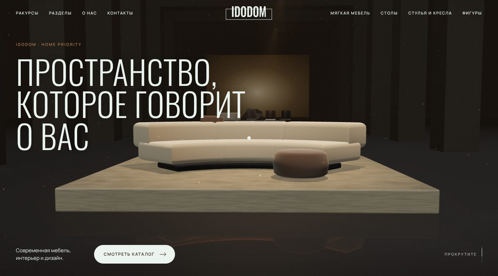
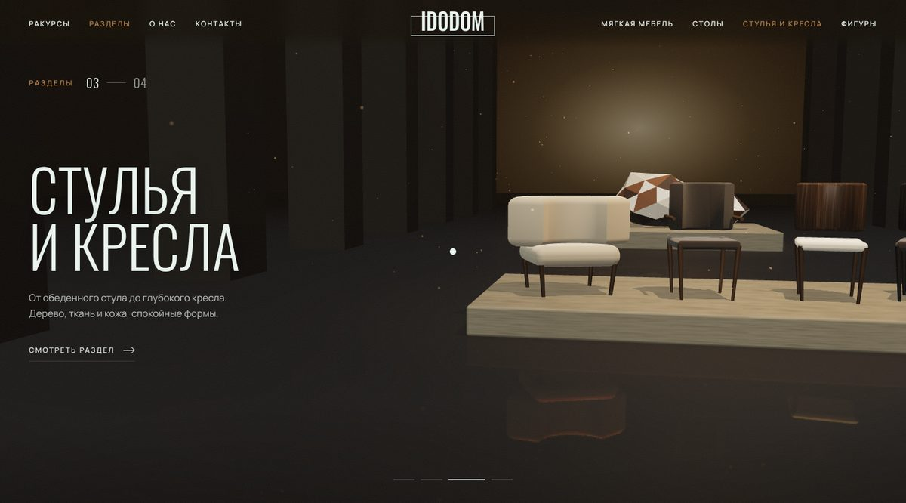

Сайт 1 · тёмный
Зал
Кинозал на эспрессо и крем: камера летит по залу от постамента к постаменту, пока вы листаете. Видео мраморного стола раскрывается на весь экран, каталог разворачивается карточками.
- 3D-сцена WebGL
- Ракурсы по скроллу
- Видео-раскрытие
- Карточки-разворот